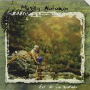

| Artist: | Mostly Autumn |
| Title: | For All We Shared |
| Label: | Cyclops CYCL 080 |
| Length(s): | 66 minutes |
| Year(s) of release: | 1999 |
| Month of review: | 01/2000 |
| 1) | Nowhere To Hide (close My Eyes) | 6.10 |
| 2) | Porcupine Rain | 4.38 |
| 3) | The Last Climb | 7.58 |
| 4) | Heroes Never Die | 9.31 |
| 5) | Folklore | 5.47 |
| 6) | Boundless Ocean | 5.40 |
| 7) | Shenanigans | 3.48 |
| 8) | Steal Away | 4.54 |
| 9) | Out Of The Inn | 6.41 |
| 10) | The Night Sky | 10.25 |